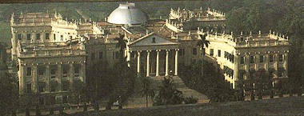

RAJ BHABAN
Raj Bhaban, or the Government House was ordered by Lord Wellesley in place of the then existing Buckingham House (official residence of the Governor General) and the adjacent Old Council House and began to be built from the year 1799. Completed at the cost of rupees 12 lakhs, it was an extravagant scandal which only surfaced in 1802 when the East India Company's Court of Directors came to know of its existence. By then, most of the palace was already built and the Lord Wellesley had already started living in the premises and throwing official parties even a year before the completion of the building. Lord Curzon is said to have remarked that it was without doubt the finest Government House occupied by the representative of any Sovereign or Government in the world. Today, it is the official residence of the governor of West Bengal and is well maintained by a resident workforce. It is inaccessible to the general public and is heavily guarded at all entrances.